We're Open
- Mon-Sun: 24 Hours Emergency Service Available
- adminhydrolinkplumbing.com.au
We're Open


153 Macquarie St, Parramatta NSW 2150
.webp)
What Does an Emergency Plumber in Sydney Do?
Plumbing issues often arrive without warning, and when they do, they rarely give you time to prepare. A burst pipe in the middle of the night, a blocked drain that overflows during a busy morning, or a sudden gas leak can quickly turn into a stressful and costly situation. In these moments, the role of an emergency plumber Sydney becomes critical. An emergency plumber is not just someone who fixes pipes quickly. They are trained professionals who respond to urgent situations, assess risks, and take immediate action to prevent further damage. Their ability to act fast can make the difference between a minor repair and a major property disaster.
.webp)
When Should You Call a 24 Hour Plumber?
Plumbing problems don’t follow a schedule. They can occur late at night, early in the morning, or during weekends when most services are unavailable. While some issues can wait until regular business hours, others demand immediate attention. Knowing when to call a 24 hour plumber Sydney can help you avoid serious damage, expensive repairs, and safety risks. A 24-hour plumber is available around the clock to handle urgent situations. Their role is not just to fix problems quickly but to prevent them from escalating into larger, more costly issues. Understanding the difference between a minor inconvenience and a true plumbing emergency is essential for every homeowner and business owner.
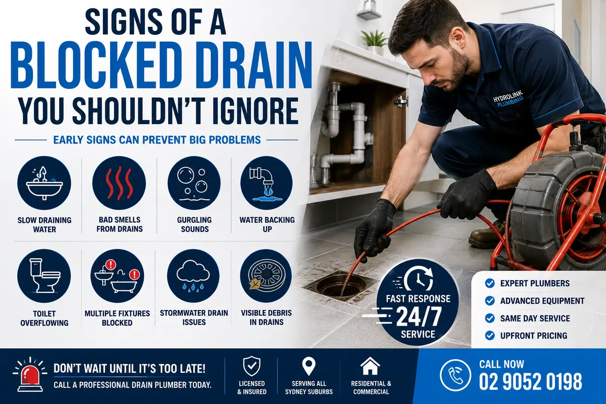
Signs of a Blocked Drain You Shouldn’t Ignore
Blocked drains are one of the most common plumbing issues faced by homeowners and businesses in Sydney. While a slow-draining sink or a minor blockage might seem like a small inconvenience, these early warning signs often indicate a deeper problem within your plumbing system. Ignoring them can lead to serious damage, unpleasant odors, and costly repairs. Understanding the signs of a blocked drain and acting quickly can help you avoid emergencies and maintain a healthy plumbing system.
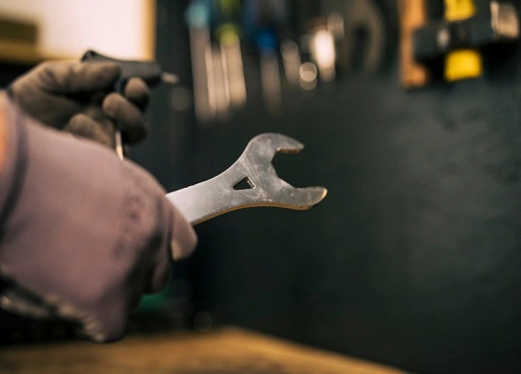
Blocked Drains in Sydney: Causes, Prevention, and Solutions
Sydney, a bustling city known for its stunning harbour and iconic landmarks, is not exempt from the common problem of blocked drains. Whether you reside in a residential property or manage a commercial establishment, dealing with a blocked drain can be an inconvenient and frustrating experience. In this comprehensive guide, we'll explore the causes behind blocked drains, discuss effective prevention strategies, and provide solutions to help you tackle this issue head-on. So, if you're tired of dealing with clogged pipes and persistent odours, contact Hydrolink Plumbing to resolve blocked drains in Sydney.
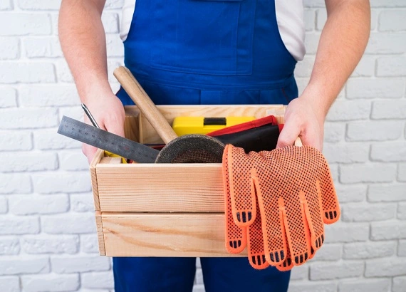
Sydney's Sustainable Plumbing Practices: Eco-Friendly Solutions
As the demand for eco-friendly practices continues to grow, the plumbing industry in Sydney has stepped up to the challenge. Plumbing companies in the city are now incorporating sustainable practices into their services to help protect the environment and provide efficient solutions. Whether you are in need of residential or commercial plumbing services, finding a plumber in Sydney who prioritizes sustainability is now easier than ever. In this article, we will explore some of the eco-friendly solutions offered by Hydrolink Plumbing, from innovative technologies to water-efficient strategies.
Sydney's Commercial Plumbing Needs: Services for Businesses
When it comes to running a successful business in Sydney, ensuring that your plumbing needs are met is essential. Having a reliable and efficient plumbing system not only contributes to the smooth functioning of your operations but also ensures the safety and comfort of your employees and customers. In this article, we will explore the advantages of Hydrolink Plumbing services in Sydney for businesses and help you make informed decisions to meet your commercial plumbing requirements.
Choosing the Right Plumber in Sydney: Tips and Considerations
When it comes to plumbing services in Sydney, finding the right plumber can be a daunting task. With so many options available, it's important to carefully consider your choices in order to ensure quality work and peace of mind. In this article, we will explore some valuable tips and considerations to help you choose Hydrolink Plumbing, the perfect plumber for your needs.
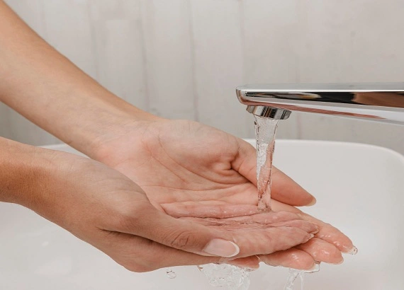
Sydney Water Restrictions: Tips for Conserving Water at Home
As Sydney enters a period of water restrictions, it becomes crucial for residents to be mindful of their water usage and take steps to conserve this precious resource. By making small changes to our daily routines and adopting water-saving practices, we can all contribute to ensuring a sustainable future for our city. In this article, we will explore various tips and strategies to help you conserve water at home.
Sydney's Historic Homes: Plumbing Challenges and Solutions
Sydney, with its rich history and architectural wonders, is home to numerous historic houses that have stood the test of time. These magnificent properties, often admired for their exquisite design and craftsmanship, also come with their fair share of challenges when it comes to plumbing. In this article, we will delve into the unique plumbing challenges faced by owners of historic homes in Sydney and explore some innovative solutions by Hydrolink Plumbing to preserve the charm of these architectural gems.
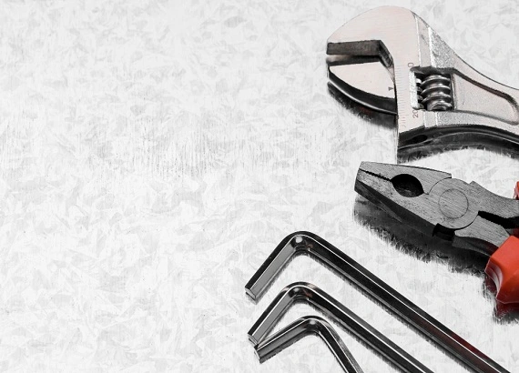
Local Plumbing Codes and Regulations in Sydney
Finding a reliable and knowledgeable plumber can be a daunting task, especially when it comes to navigating the complex web of local plumbing codes and regulations. In Sydney, there are specific guidelines that plumbers must adhere to ensure the safety and functionality of plumbing systems. In this article, we will explore the importance of Hdyrolnik Plumbing's local plumbing codes and regulations in Sydney and how they impact both plumbers and homeowners.
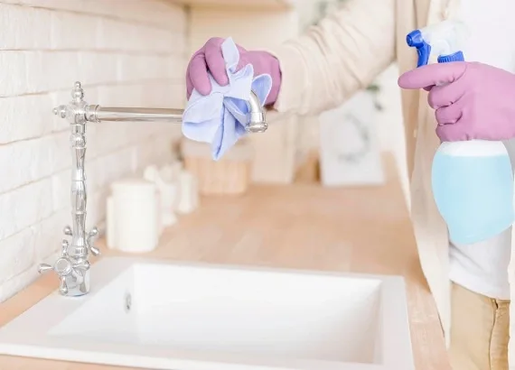
The Impact of Sydney's Coastal Location on Plumbing Systems
The stunning coastal location of Sydney not only attracts tourists from around the globe but also poses unique challenges to plumbing systems in the city. The salty sea air, high humidity, and heavy rainfall all contribute to the wear and tear of plumbing infrastructure. In this article, we will explore the specific impacts of Sydney's coastal location on plumbing systems and how residents can best maintain and protect their plumbing with the help of Hydrolink Plumbing.
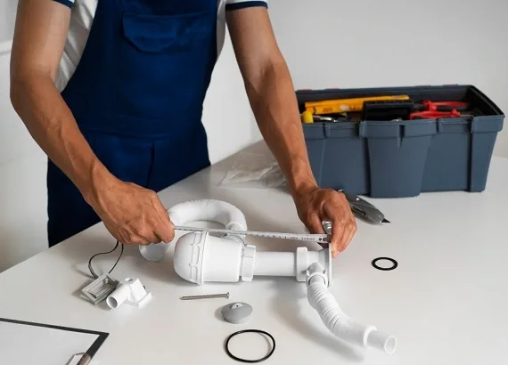
Emergency Plumbing Services in Sydney: What You Need to Know
Have you ever experienced a plumbing emergency that left you feeling overwhelmed and unsure of what to do? Look no further! In this article, we will explore the ins and outs of emergency plumbing services in Sydney by Hydrolink Plumbing. Whether you live in the heart of the city or its surrounding suburbs, it's crucial to be equipped with the knowledge and understanding of the services available so that you can tackle any plumbing issue with confidence and ease.
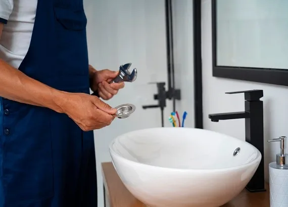
Renovating Your Bathroom? Essential Plumbing Considerations for Sydney Homeowners
Renovating your bathroom can be an exciting project, transforming this essential part of your home into a space that reflects your style and meets your functional needs. However, before diving headfirst into the world of tiles and fixtures, it's essential to have a solid understanding of the plumbing considerations specific to your Sydney home. Planning ahead and considering the expertise of professional plumbers in Sydney can save you time, money, and potential headaches down the line.
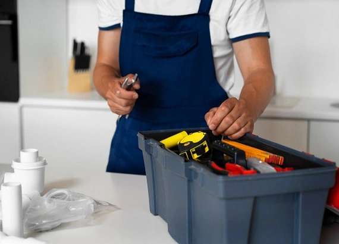
Kitchen Plumbing Essentials: Ensuring Efficiency and Functionality in Your Sydney Home
The plumbing system in your kitchen plays a critical role in maintaining the efficiency and functionality of your home. Whether you are a homeowner or a business owner in Sydney, understanding the importance of kitchen plumbing is essential. In this article, we will explore the various aspects of kitchen plumbing, the services provided by Hydrolink Plumbing in Sydney, and how to ensure your plumbing system operates smoothly.
Common Misconceptions About Plumbing: Debunking Myths in the Sydney Context
When it comes to plumbing, there are numerous misconceptions and myths that often mislead homeowners and business owners in Sydney. With so much misinformation out there, it's crucial to debunk these common misconceptions and provide clarity on important plumbing issues. In this article, we will address some of the most prevalent myths surrounding plumbers in Sydney, and shed light on the truth behind these misconceptions.
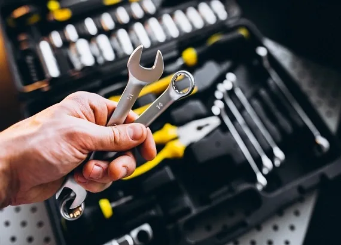
The Role of Sydney Plumbing in Sustainable Home Design: Lessons from Sydney's Eco-Friendly Houses
In the era of environmental consciousness, the importance of sustainable home design cannot be overstated. Every aspect of a house, from its construction materials to its plumbing systems, contributes to its overall sustainability. Plumbing, in particular, plays a crucial role in ensuring that a home is eco-friendly and efficient. In this article, we will delve into the various ways in which plumbing contributes to sustainable home design, drawing inspiration from the eco-friendly houses of Sydney, Australia.
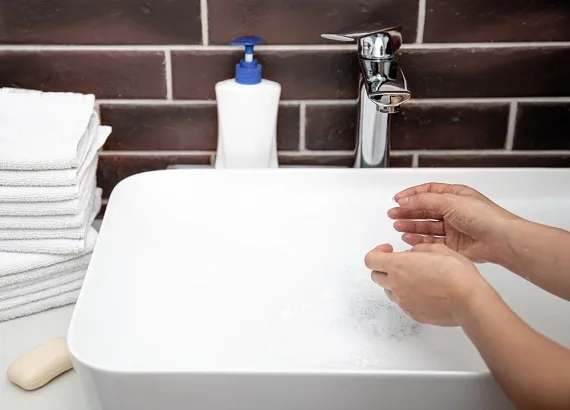
Water-Saving Strategies: How Sydney Residents Can Conserve Water and Reduce Bills
Water conservation is a critical issue, especially in regions like Sydney where water scarcity and rising utility bills are a concern for both residents and businesses. In an effort to address this problem, it is vital to adopt water-saving strategies that not only help preserve our precious resources but also contribute to significant cost savings. In this article, we will explore a range of effective water-saving techniques and highlight the importance of hiring Hydrolink Plumbing's professional plumbers in Sydney to maximize their impact.
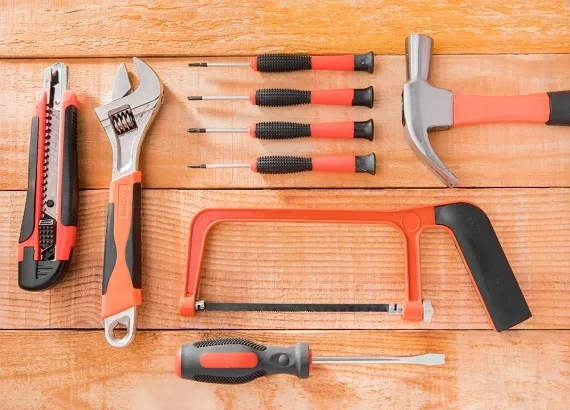
Dealing with Blocked Drains: DIY Solutions vs. Professional Plumbers in Sydney
Blocked drains can be a frustrating and inconvenient problem that many homeowners and businesses in Sydney encounter. When faced with a blocked drain, it's important to consider whether a do-it-yourself (DIY) solution is sufficient or if professional plumbers in Sydney like Hydrolink Plumbing should be called upon. In this article, we will explore the advantages and disadvantages of both options, based on your specific needs.
Choosing the Right Water Heater for Your Sydney Home: Gas vs. Electric
When it comes to finding the perfect water heater for your Sydney home, there are two popular options to consider: gas and electric. Each type has its own advantages and considerations that should factor into your decision-making process. In this article, we will explore the key differences between gas and electric water heaters, and discuss Hydrolink Plumbing's gas water heaters and electric water heaters services.
Winter Plumbing Tips for Sydney: Protecting Your Pipes from Freezing
As the cold winter months set in, it's crucial for Sydney residents to take proactive measures to protect their pipes from freezing. Frozen pipes can lead to costly repairs and inconveniences, so it's essential to safeguard your plumbing system. In this article, we will share some valuable tips on how to prevent frozen pipes and the importance of hiring Hydrolink Plumbing's professional plumbers in Sydney to address any plumbing issues that may arise during the winter season.
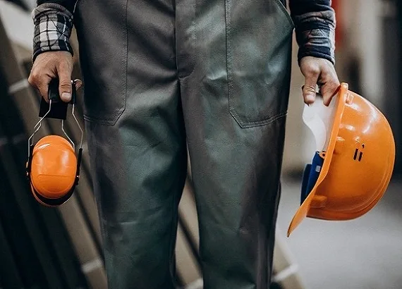
Upgrading Your Sydney Home: Innovative Plumbing Fixtures and Technologies
Being a homeowner in Sydney comes with the responsibility of maintaining and upgrading your property to ensure its functionality and aesthetic appeal. One crucial aspect of home maintenance is the plumbing system in Sydney, which plays a vital role in providing clean water and efficient wastewater disposal. In this article, we will explore Hydrolink Plumbing's latest fixtures and technologies that can elevate your Sydney home to new levels of innovation and convenience.
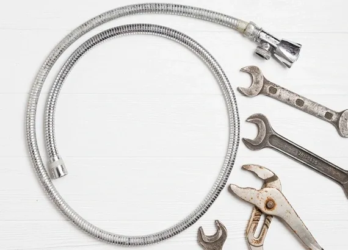
How Sydney Plumbers Are Adapting to Climate Change Challenges
Climate change has become a pressing issue worldwide, impacting various sectors, including the plumbing industry. Our Sydney plumber faces unique challenges as it adapts to the changing climate. In this article, we will explore how Sydney plumbers of Hydrolink Plumbing are proactively addressing these challenges to ensure the city's plumbing systems remain efficient, sustainable, and resilient.
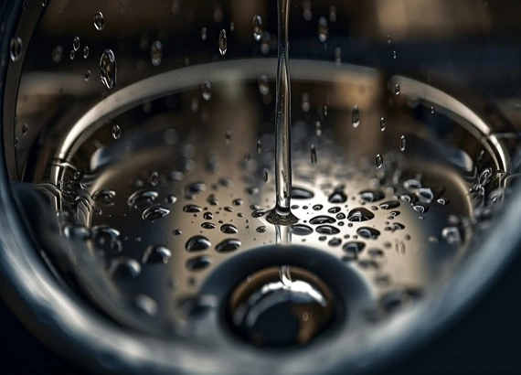
Sydney's Water Quality: How It Impacts Your Plumbing and What to Do About It
Sydney, the vibrant metropolis of Australia, is known for its stunning harbour, iconic landmarks, and thriving urban landscape. However, beneath its bustling surface lies a topic often overlooked - water quality. The quality of water in Sydney can have a profound impact on your plumbing system, affecting its performance and longevity. In this article, we will explore the services of Hydrolink Plumbing which influence Sydney's water quality and delve into the steps you can take to ensure optimal plumbing functionality.
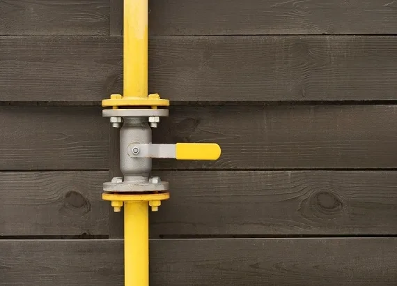
The Future of Plumbing: Technological Advancements Impacting Sydney's Plumbing Industry
Sydney, known for its bustling city life and iconic landmarks, is an ever-evolving city that embraces technological advancements in various industries. One such industry that has experienced a significant transformation is the plumbing industry. In this article, we will delve into Hydrolink Plumbing services, exploring the innovative technologies that are shaping the future of plumbing services in Sydney.
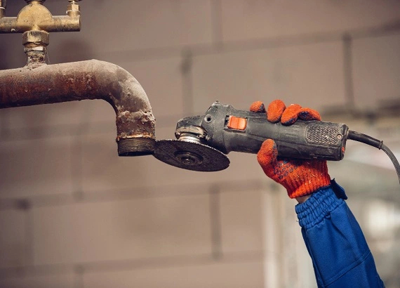
Emergency Plumbing Services in Sydney: What to Expect and When to Call
When it comes to plumbing issues, emergencies can strike at any moment, causing stress and disruption to our daily routines. Whether you are a homeowner or a business owner in Sydney, it is crucial to have access to reliable emergency plumbing services. In this article, we will explore Hydrolink Plumbing's emergency plumbing services in Sydney and when it's appropriate to call for our Sydney plumbers.
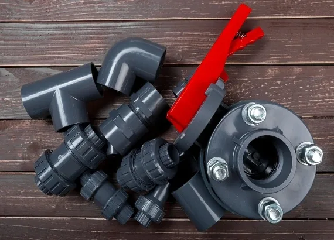
The Advantages of Hiring Licensed Plumbers in Sydney
When it comes to plumbing services in Sydney, it's essential to consider the expertise and qualifications of the professionals you hire. While there might be various options available, Hydrolink Plumbing's licensed Sydney plumber offers numerous advantages. From our extensive knowledge and experience to our adherence to strict industry standards, hiring our licensed Sydney plumbers provides peace of mind and ensures high-quality workmanship. In this article, we will explore the various benefits of engaging Hydrolink Plumbing for your residential plumbing needs in Sydney.
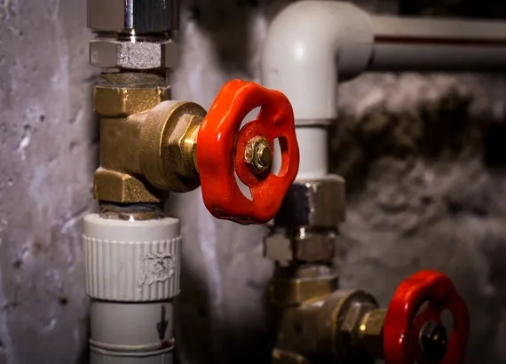
Understanding the Importance of Regular Plumbing Maintenance in Sydney
Plumbing systems play a crucial role in maintaining the functionality and comfort of our homes and businesses. However, they are often taken for granted until a major plumbing issue arises. To avoid costly and disruptive plumbing emergencies, it is essential to prioritize regular plumbing maintenance. This article explores the significance of regular plumbing maintenance in Sydney, shedding light on the benefits it offers and the services provided by Hydrolink Plumbing in Sydney.
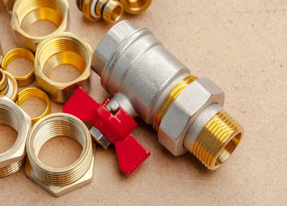
A Comprehensive Guide to Choosing the Right Sydney Plumbing Service
Finding a reliable plumbing service in Sydney can be a tough task. With numerous options available, it's important to choose the right Sydney plumber who can efficiently meet your residential or commercial plumbing needs. That's why Hydrolink Plumbing is the best choice for your plumbing needs.
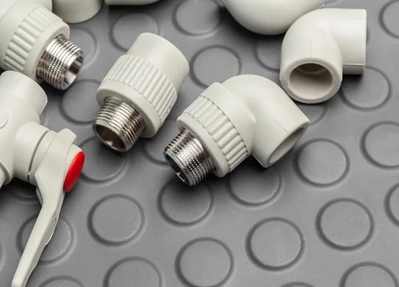
Say Goodbye to Plumbing Woes with Sydney's Finest Plumbing Services!
Are you tired of dealing with plumbing problems in your home or office? Look no further, because Hydrolink Plumbing, Sydney's finest plumbing services is here to save the day! Our expert plumbers in Sydney have got you covered. With our exceptional skills and top-notch service, you can bid farewell to all your plumbing woes. Read on to discover why Hydrolink Plumbing is the best in the business.
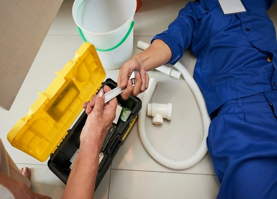
Sydney Plumbing Services Guide: Finding the Perfect Match for Your Plumbing Needs
When faced with plumbing problems in your home or business, finding an experienced plumber is crucial. It is important to have expert Sydney plumbers that will help you find the perfect solution for your plumbing needs. In this article, we will explore the various aspects to consider when searching for Sydney plumbers and discuss how Hydrolink Plumbing can provide the best solutions you require.
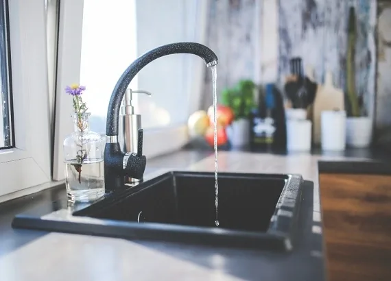
Flawless Flow: Sydney's Premier Plumbing Services Keeping Your Pipes in Prime Shape
If you're a resident or business owner in Sydney, you know how important it is to have reliable plumbing services at your disposal. From addressing minor leaks to handling complex projects, Sydney's premier plumbers are here to ensure flawless flow and keep your pipes in prime shape. In this article, we'll explore the plumbing services of Hydrolink Plumbing and discuss the benefits of hiring our professional plumbers.
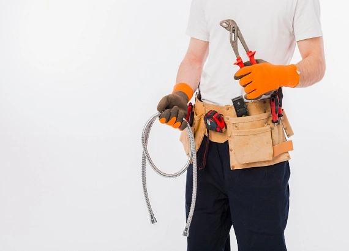
Unveiling the Best Plumbing Services in Sydney: Your Solution to Any Plumbing Crisis!
Finding a reliable and trustworthy plumber can often feel like searching for a needle in a haystack. With so many options available, it can be challenging to determine which professionals are truly the best at what they do. In this article, we will introduce you to Hydrolink Plumbing, the top-notch plumbing services in Sydney. At Hydrolink Plumbing, we ensure that you get a reliable plumbing solution to any kind plumbing problems.
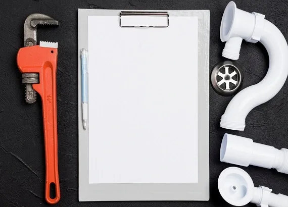
Plumbing Services Perfected: Sydney's Most Trusted Plumbers Make a Splash!
If you need emergecy plumbing services then finding reliable and trustworthy plumbers is imperative. Plumbing issues can arise at any time, it's crucial to have a go-to team of professionals who can swiftly and efficiently tackle any problem. Look no further than our list of Sydney's most trusted plumbers, who have perfected their services to ensure your plumbing worries are a thing of the past. Hydrolink Plumbing is most trusted plumbing service provider in Sydney.
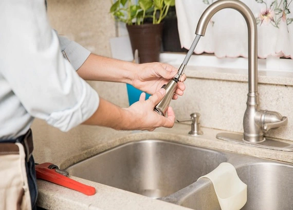
Your Plumbing Lifesavers in Sydney: Uncovering Top-rated Services in the City
When it comes to plumbing issues in your home or office, finding reliable and top-rated plumbing services is crucial. Sydney, being a bustling city with its fair share of plumbing woes, requires the expertise of skilled Sydney plumbers who can deliver exceptional services promptly. In this article, we will uncover some of the best plumbing services in Sydney, catering to both residential and commercial needs. From emergency plumbing solutions to routine maintenance, Hydrolink Plumbing is top-rated service provider have got you covered.
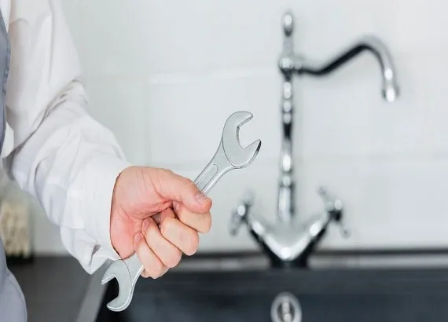
Solving the Plumbing Puzzle: Unlocking Sydney's Finest Plumbing Services
Are you tired of dealing with plumbing issues that seem to never end? Look no further! In this article, we will explore the top-notch plumbing services available in Sydney that will solve all your plumbing problems once and for all. Whether you are a homeowner or a business owner, plumbing emergencies can occur at any time. It is important to get trustworthy plumbing company such as Hydrolink Plumbing.
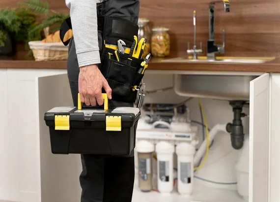
From Drips to Damage: Expert Plumbing Services in Sydney to Rescue Your Home
If you maintain your living environment, proper plumbing is most important. However, even the smallest plumbing issues, such as drips, can escalate into significant damage if left unattended. That's why it's important to have access the expert plumbing service provider in Sydney such as Hydrolink Plumbing that can quickly and efficiently rescue your home from potential disaster. In this article, we will explore the importance of professional plumbing services in Sydney, including residential and commercial plumbing.
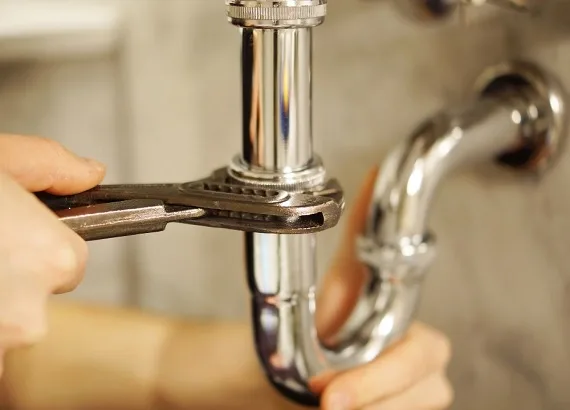
Sydney's Top-notch Plumbing Services: Experiencing Superior Quality and Unmatched Reliability
Whether you are facing an emergency situation or planning a routine maintenance check, choosing the right Sydney plumber can make all the difference. In this article, we will explore Hydrolink Plumbing, Sydney's top-notch plumbing service provider that offer superior quality and unmatched reliability. From residential to commercial plumbing needs, we've got you covered! If you need any kind of plumbing services in Sydney, nothing is more crucial than having access to skilled and experienced Sydney plumbers.
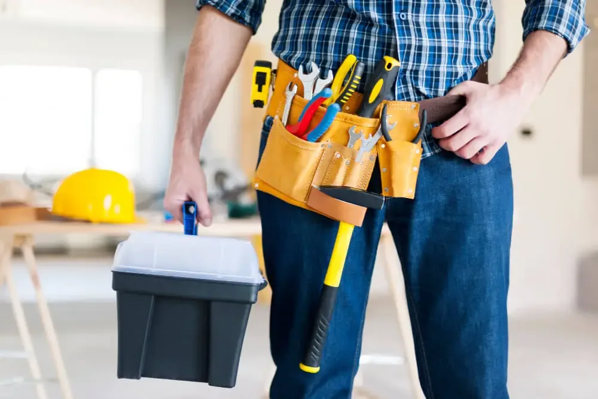
Choosing the Right Sydney Plumber: What to Look For
When it comes to plumbing services, finding the right Sydney plumber can be a daunting task. With so many options available, how do you ensure that you choose a professional who will meet your needs and provide top-notch service? In this blog, we will guide you through the essential factors to consider when selecting a plumber in Sydney. From commercial plumbing to residential plumbing services, we will help you make an informed decision that will save you time, money, and hassle.
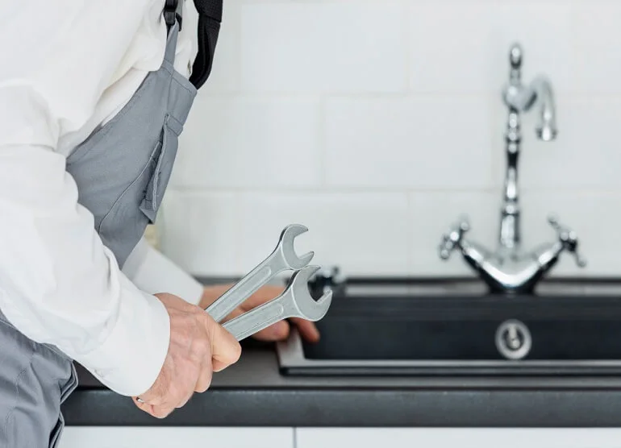
The Importance of Regular Plumbing Maintenance in Sydney
When it comes to maintaining your home or business plumbing system in Sydney, Hydrlink Plumbing should be at the top of your list. Neglected plumbing systems can lead to major issues such as leaks, floods, and water damage, which can cause expensive repairs and disrupt your daily routine. Regular plumbing maintenance is crucial to ensure the efficiency and longevity of your plumbing infrastructure. In this blog, we will explore the significant benefits of regular plumbing maintenance in Sydney, as well as the key factors to consider when choosing a Sydney reliable plumbing service provider.
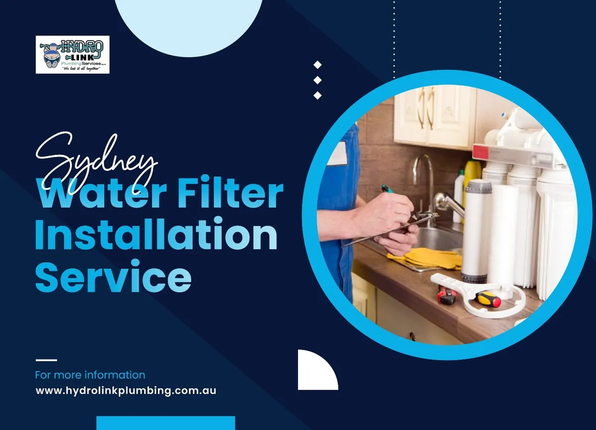
How to Maintain Your Stormwater Drain?
Discover the importance of maintaining your stormwater drain and learn expert tips from Hydrolink Plumbing, a trusted plumbing company in Sydney, Australia. In this article, we share insights on inspecting, cleaning, and maintaining your stormwater drain to prevent flooding and costly repairs. From understanding the significance of stormwater drains to hiring professionals for complex issues, our comprehensive guide will help you keep your drainage system in excellent condition. Avoid property damage and ensure efficient water flow by following our expert tips.
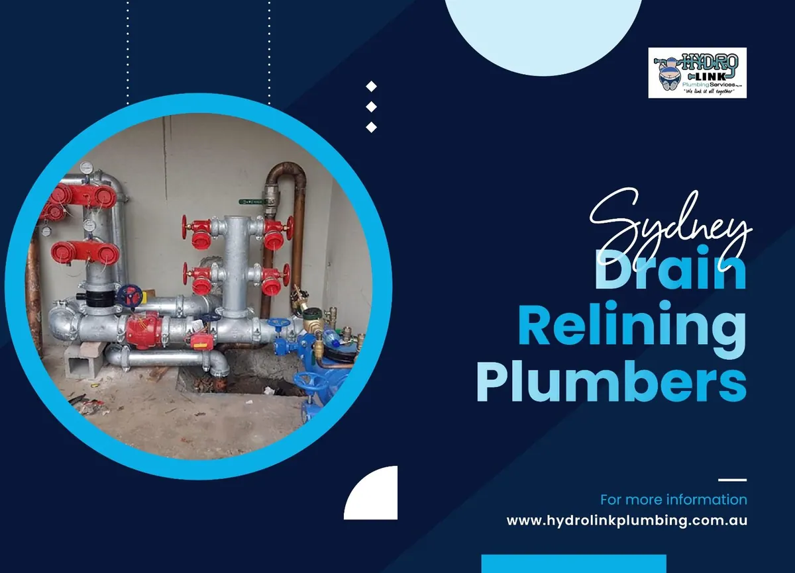
Five most annoying plumbing problems and their solutions
Are you tired of constantly dealing with annoying plumbing problems in your Sydney home? From leaky faucets to low water pressure, these issues can cause serious damage and inconvenience. In this article, we'll go over the top five most common plumbing problems in Sydney and provide solutions on how to fix them. Save yourself time and money by learning how to handle these pesky plumbing problems on your own or with the help of a professional plumber. Don't let these issues get in the way of your daily routine and peace of mind.
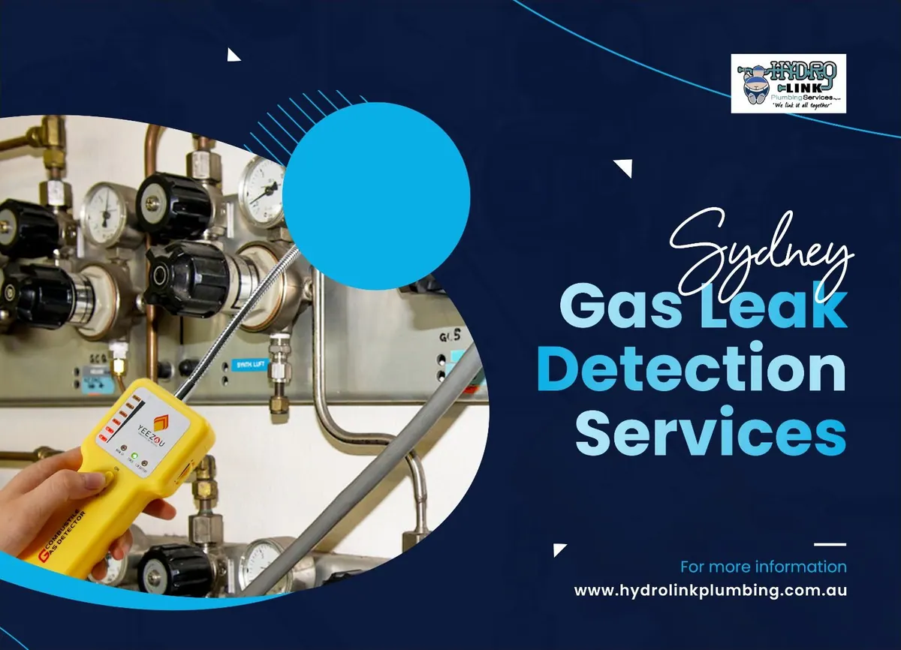
What should you do in a gas leak emergency?
Gas leaks can be a serious emergency that puts you and your loved ones at risk. But how do you know if there is a gas leak? What causes gas leaks, and how can you prevent them? In this blog post, we'll cover everything you need to know about gas leaks, including how to detect a gas leak, common causes of gas leaks, how to prevent gas leaks, and why you should always leave gas leak repairs to the professionals. By following these tips, you can help keep your home and family safe in case of a gas leak emergency.
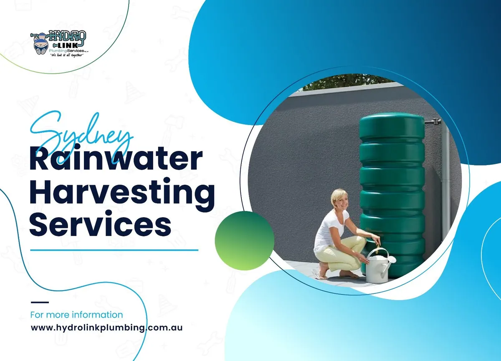
Why should you always work with a licensed Sydney plumber
Are you experiencing plumbing issues at home, and considering hiring an unlicensed plumber to save some money? Think again. In this blog post, we'll discuss the importance of working with a licensed Sydney plumber for your plumbing needs. Plumbing regulations are in place to ensure that all plumbing installations and repairs are carried out safely and effectively. Compliance with these regulations is vital to maintain the integrity of the plumbing system and protect the health and safety of the public. A licensed plumber in Sydney has undergone extensive training and has the necessary knowledge and expertise to comply with regulations and provide high-quality plumbing services.
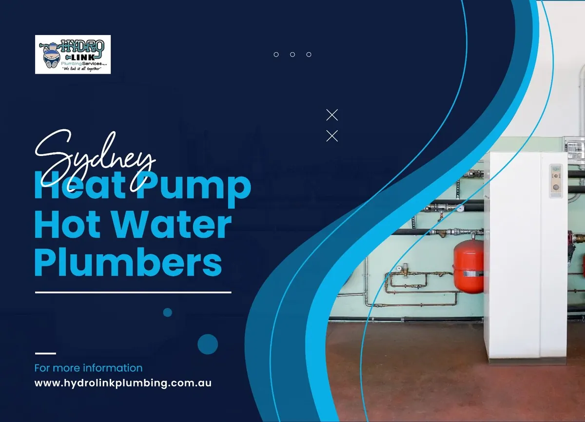
Hydro Jet cleaning: Benefits and warning signs
Are you experiencing slow draining sinks or foul odors? It might be time to consider hydro jet cleaning. This highly effective method uses a high-pressure stream of water to blast away debris, grease, and other buildup inside pipes, leaving them clean and clear. In this article, we'll take a closer look at the benefits of hydro jet cleaning, warning signs that your pipes may need cleaning, and the importance of maintaining clean pipes. Regular maintenance of your plumbing system, including hydro jet cleaning, can help you save money in the long run by preventing costly repairs and replacements.

Gas vs Electric Hot Water: Which One is Right for You?
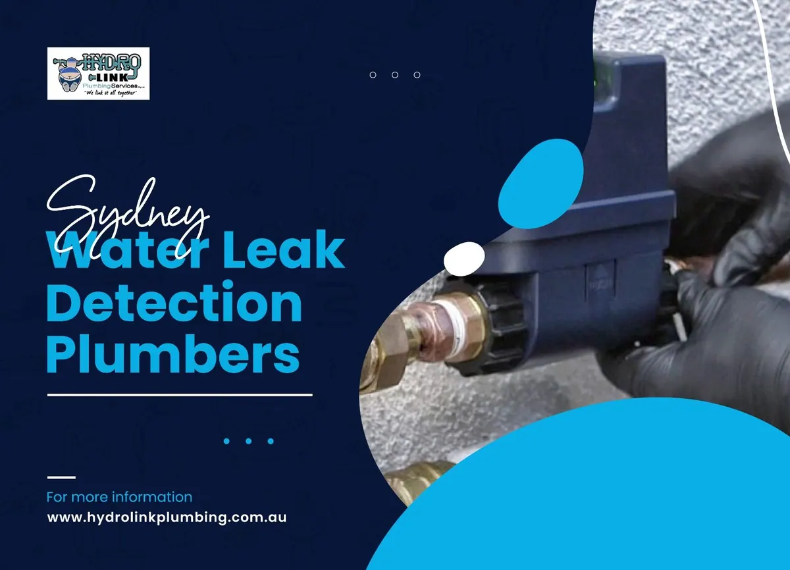
Common plumbing repairs every homeowner should know
As a homeowner, it's important to know the basics of plumbing repairs. From leaky faucets to clogged drains, these common issues can cause major headaches if left unaddressed. In this article, we'll be discussing the most common plumbing repairs that every homeowner should know, along with tips on how to fix them. Don't let plumbing problems get in the way of your day-to-day life - read on to become a DIY plumbing pro!
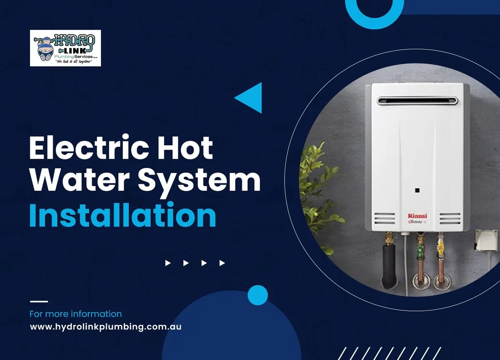
7 Tips For Efficient Plumbing Maintenance in Sydney
Are you tired of dealing with unexpected plumbing problems? Want to avoid the hassle and expense of costly repairs? Look no further! In this blog post, we'll be sharing 7 tips for efficient plumbing maintenance in Sydney. From regular check-ups to DIY repairs, we've got you covered. Keep your household running smoothly and avoid those pesky plumbing headaches with these helpful tips.
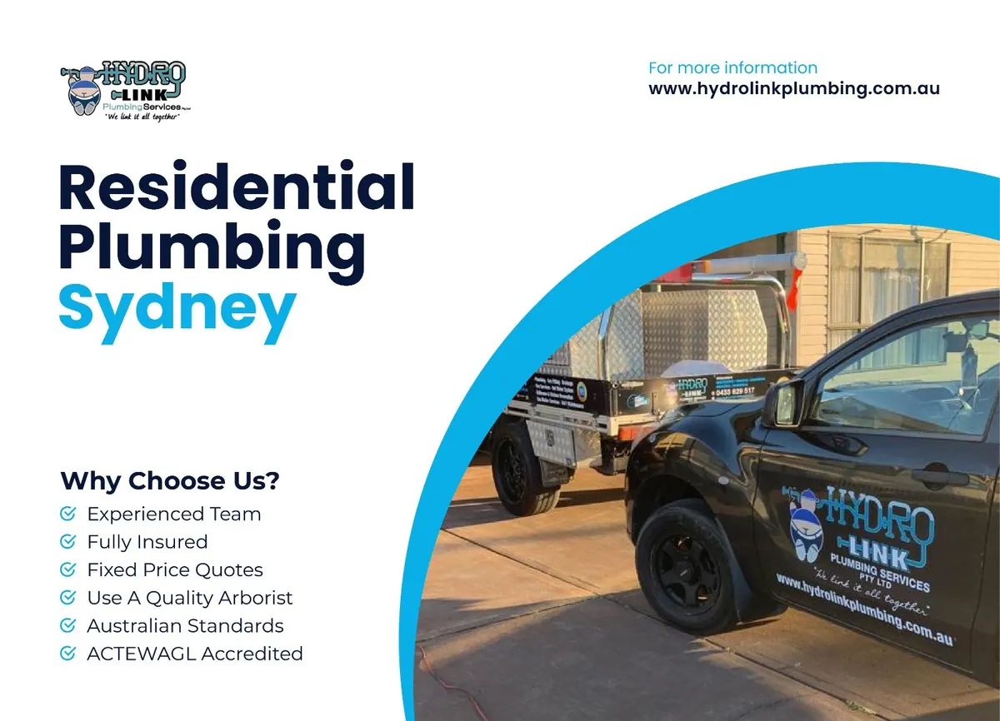
How to choose the right Sydney plumber in 2023?
If you are a Sydney resident looking for a reliable Sydney plumber for your Sydney plumbing needs in 2023, it can be a difficult task. With so many options available, how do you know whom to trust? You need to follow a few things before choosing a plumber in Sydney to make sure you find the right Sydney plumber for your needs. Start by researching plumbers in your local area of Sydney to ensure that you are dealing with a reputable professional who is experienced and qualified in their field. Consider asking for references from family, friends, or even neighbours who have used a Sydney plumber in the past to get first-hand feedback on their services. When it comes to selecting the right Sydney plumber, you should always consider the expertise, experience, customer service, and competitive pricing offered.
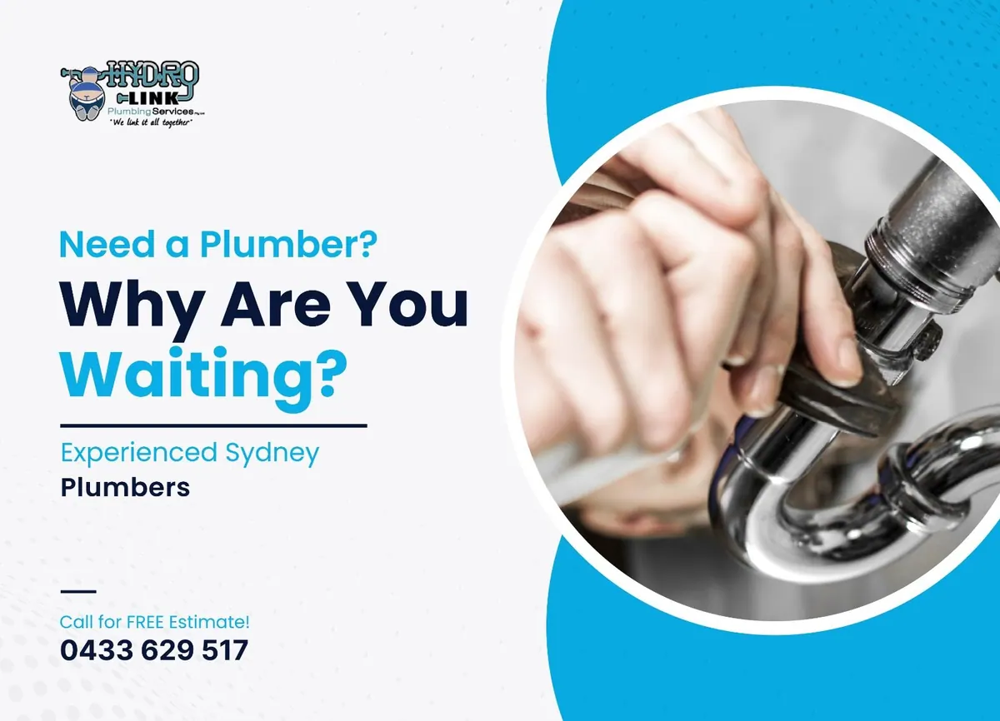
Residential vs. Commercial Plumbing in Sydney: What’s the Difference?
Plumbing systems are an essential part of any building, be it a house or a commercial establishment. Although both residential and commercial plumbing systems follow the same basic principles, some significant differences set them apart. Understanding these differences is crucial for property owners and managers to ensure they hire the right plumbing contractor for their needs. In this blog post, we'll explore the factors that distinguish residential and commercial plumbing, the common plumbing systems found in each setting, and the importance of regular maintenance for both.
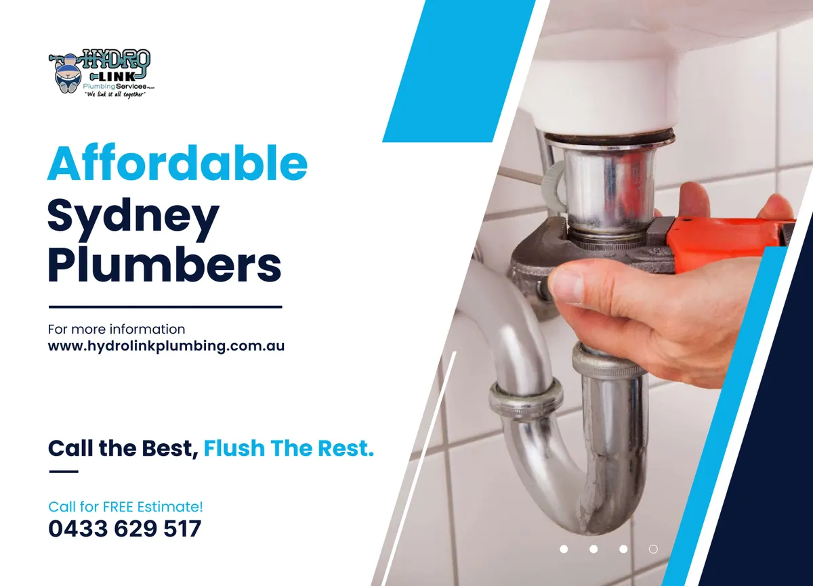
How to find a reliable qualified plumber in Sydney?
Looking for a qualified plumber in Sydney? With so many different options to choose from, it can be daunting to know where to start. There are numerous advantages to choosing a qualified and reliable plumber in Sydney. A qualified Sydney plumber has the experience and expertise to handle any Sydney plumbing issue you may have. When you hire a qualified Sydney plumber, you can trust that the job will be completed safely and to the highest standard. Begin your search for a reliable plumber in Sydney by checking online reviews and asking friends and family for recommendations. This might help you figure out the customer service, workmanship, and reputation of potential plumbing companies in Sydney. Once you have identified a few potential options, compare their qualifications and certifications as well as their customer service skills to ensure they meet all necessary requirements to do the job safely.
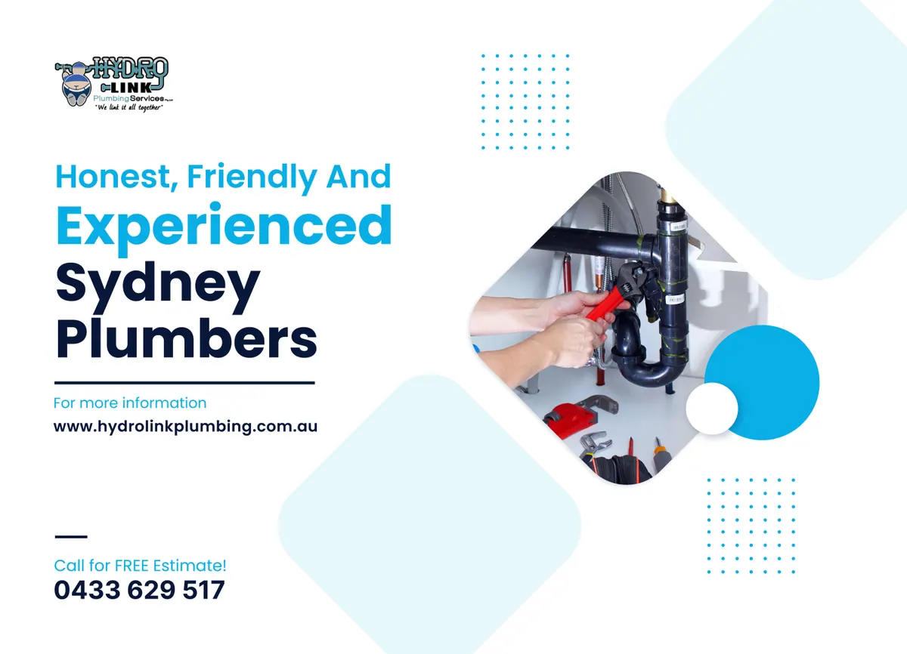
Amazing Sydney plumbing statistics and what they mean for You!
Sydney's plumbing statistics show the high quality of plumbing services Sydney provided in the city, ranging from reliable 24-hour emergency Sydney plumbing service to providing a wide range of plumbing experience and knowledge. According to the most recent statistics, Sydney plumbing services have the highest rate of customer satisfaction among Australia's major cities. This is largely due to the city's Sydney plumbers being highly experienced, responsive, and knowledgeable in their area, with many years of expertise providing quality Sydney plumbing services. These statistics can reassure Sydney residents that they are receiving the best Sydney plumbing service when they need it the most. Furthermore, these statistics point to a future of reliable and high-quality plumbing services for Sydney homeowners and business owners.
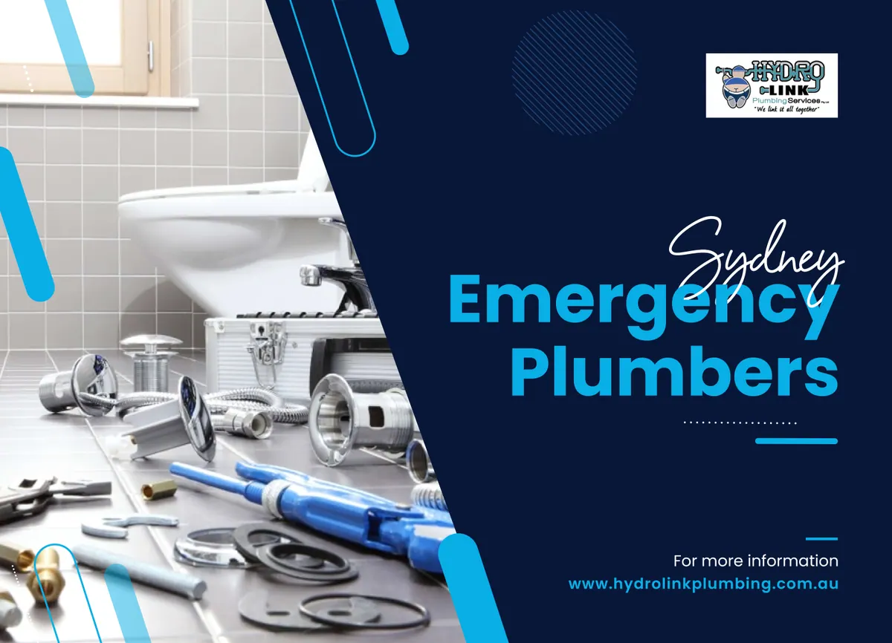
Emergency Plumbing Sydney
Are you looking for reliable emergency plumbers in Sydney? Look no further! When finding a reliable and trustworthy emergency plumbing service in Sydney, there is no better choice than Hydrolink Plumbing. The plumbing and gas services offered by Hydrolink Plumbing cover all aspects of plumbing and gas. Our qualified specialists are available for water management solutions, maintenance, and repairs, with the most common errors resolved with our services. A team of Licensed, qualified, and experienced Sydney plumbers work to maintain and solve all drainage-related issues. Hydrolink Plumbing offers the best plumbing service in Sydney so you can count on us for all your Sydney plumbing needs. With 24-hour service, 7 days a week, our certified plumbers in Sydney are ready to help you with your Sydney plumbing issues.
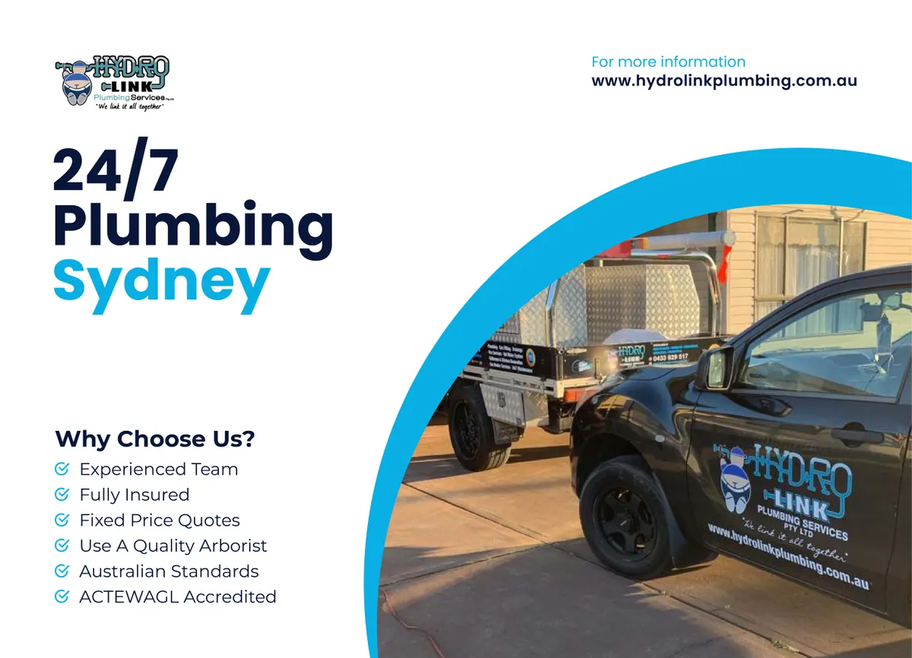
Plumbing Warning Signs You Should Never Ignore
It's easy to take Sydney plumbing for granted until something goes wrong. Unfortunately, when problems arise, it is normally too late to prevent serious damage. To avoid costly repair fees, be aware of the warning signs of Sydney plumbing problems and take action as soon as possible.
Strange smell: Another common warning sign is a strange smell coming from your drains or fixtures. You may notice a musty smell or even an odour of sewage. This could be caused by a clog beneath the surface, or it could be a sign of a serious problem like an overflowing septic tank or sewer line issue.
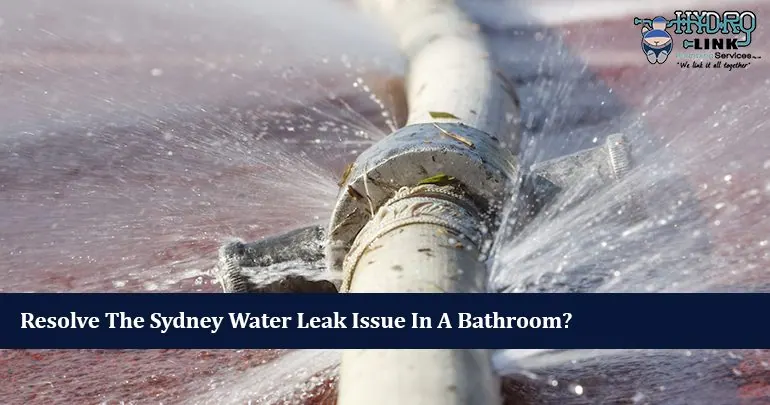
Resolve The Sydney Water Leak Issue In A Bathroom?
What should be done to resolve the water leak issue in a bathroom Sydney? If you’re dealing with a " water leak " in your bathroom Sydney , there are a few things you can do to try and resolve the problem. First, check to see if the leak is coming from the shower or from another area of the bathroom Sydney. If it’s coming from the shower, then you may be able to fix it by simply replacing the showerhead or " tightening the connections ". If the leak is coming from another area, such as the toilet or sink, you’ll need to take a closer look at the plumbing to see what needs to be repaired. Metal screens are one of the best ways to prevent clogging the pipes. The screen can catch any food particles that could otherwise be flushed down when you wash the dishes. Essentially, the water softener can keep your entire plumbing system running smoothly but to do that, the softener’s tank must be cleaned at least once a year. They've seen it all before and at the end of day, Hydrolink Plumbing is your Sydney Plumber . For the ultimate plumbing services in Sydney, call Hydrolink Plumbing today. Our team of qualified, experienced and licensed Sydney plumbers have helped us to maintain our 5-star reputation making us one of the leading local plumbing companies in Sydney. That means you are guaranteed to receive the best service when you call Sydney Plumbing to handle your plumbing requirements.
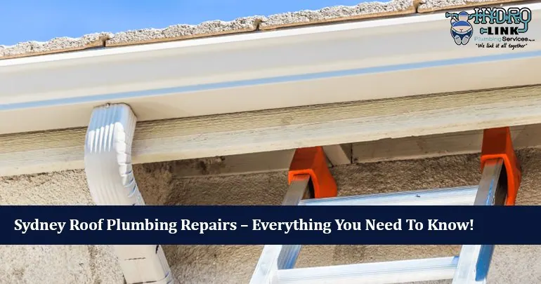
Sydney Roof Plumbing Repairs – Everything You Need To Know!
The roof is a vital part of any building. It protects your property from environmental hazards that could damage both interior and exterior components such as rain, tree branches, ice, hail and snow. Working with a highly trained Sydney roof plumber is essential especially when you start to notice issues with your gutters. Our professional Sydney plumbers here at Hydrolink Plumbing possess the know-how to handle the installation, maintenance and repair of gutters, asphalt shingles, slate roofs and any other plumbing fixture related to your roof! Roof plumbing in Sydney refers to the altering, installation, maintenance, renovation and repairing of guttering, downpipes, roof flashing and roof coverings on residential and commercial buildings. It can also include working with skylights, ventilators and other similar fittings. Here at The Hydrolink Plumbing we do have qualified Sydney roof plumbers who would be more than happy to help you with any issue.
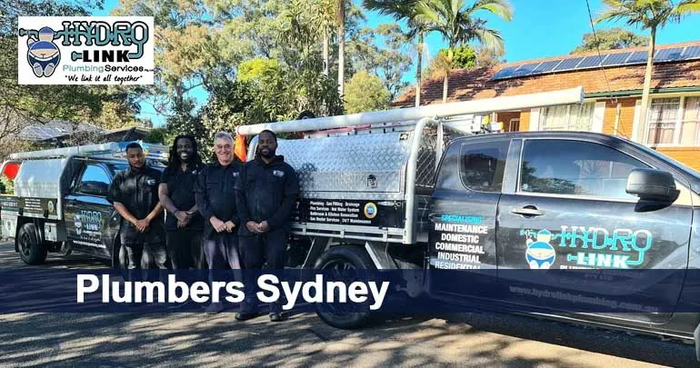
Plumbers Sydney
Need to get someone out to your property as soon as possible? Is something in your home flickering, shorting out or behaving strangely? Dont ever attempt to do your own plumbing work! Hire the professionals to get the job done. Never perform your own plumbing repairs without necessary experience in the field! licensed and professional Plumbers Sydney who do the job the right way. When you book with us, you book a fully licenced and qualified Sydney plumber who will provide you with a fixed service time for your plumbing job, allowing you to plan your day. Our plumbers have vans fully stocked with high quality plumbing tools and fixtures to implement the best solution to your problem we possibly can. We also offer free quotes with no call.
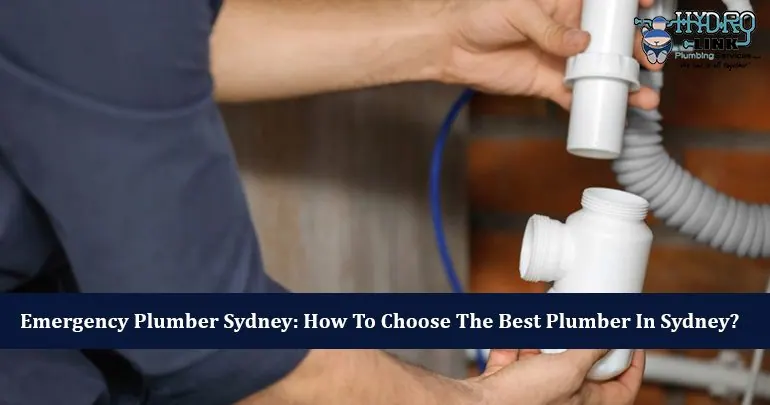
Emergency Plumber Sydney: How To Choose The Best Plumber In Sydney?
6 Common Sydney Plumbing Issues in Strata Properties
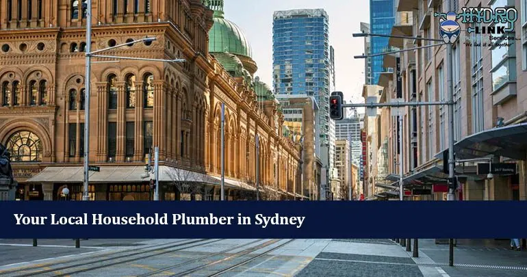
Your Local Household Plumber in Sydney
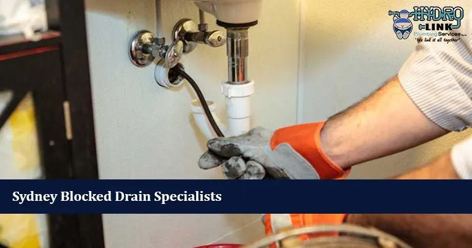
Sydney Blocked Drain Specialists
5 things you can do to prevent a blocked drain in Sydney
Sydney Sewer Inspection - How It Works
Hot Water Systems Sydney – Repairs & Installations
Sydney Commercial Plumbers
Commercial Plumbing Services Sydney
Domestic Plumbing Services Sydney
Sydney’s Best Plumbing Team
Fascinating Sydney Plumbing Facts You Need To Know
Good Plumbers in Sydney Don’t Always Come Easy
Your Local Sydney Plumber
Sydney's Best Emergency Plumbers
Reasons Why You Need Expert Help from a Plumber in Sydney?
Why you Need a Reliable Sydney Based Plumber?
Here are four reasons why you should hire a professional plumber:
- Professional Plumbers Have the Tools Needed for The Job.
- Reliability
Kitchen Renovation Sydney
How To Pick The Right Kitchen Design in Sydney
Firstly you will need to asses your floorplan or floor plan layout, to decide which TYPE of Design you will need before we get to the fun stuff, like
Theme - Colour & Finish or Stone Choice!
At Hydrolink Plumbing Service, we are fully qualified and skilled in all area of kitchen renovation in Sydney. For more than a decade into this profession, we understand all the issues involved in kitchen renovation. Hydrolink Plumbing Service take care of all plumbing aspects involved with your kitchen renovation, such as connecting, disconnecting and moving kitchen plumbing fixture and fittings.
Backflow Plumbing Sydney - Backflow Preventer Installation Sydney
Sydney Backflow Testing
Gas Leak Detection Sydney
Unblock Sink Drains Sydney
Gutter Leaks Sydney
Backflow Prevention Sydney
Grease Trap Installation Sydney
Blocked Toilet Drains Sydney
Blocked Shower Drain Sydney
Fix Drain Leaks Sydney
Pipe Relining Sydney
Why High Pressure Jetting Is The Solution For Sydney Blocked Drains
Gas Hot Water System Sydney
Heat pump Hot Water System Sydney

Solar Hot Water System Sydney
Tap Installation Sydney

Commercial Plumbing Sydney
Residential Plumbing Sydney

Hot Water Systems Sydney

Electric Hot Water Systems Sydney
Gas Fitters Sydney
- Licensed plumbersLicence no. 265578C
- Registered businessABN 46 669 298 668
- Google rating: 5.0See our Google reviews
- Homes, strata and businessResidential, strata and commercial plumbing